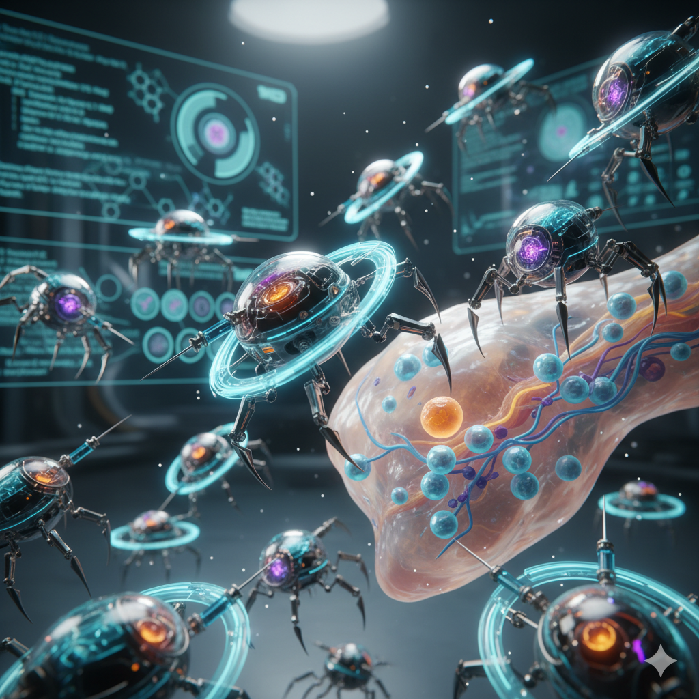
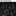

Participant Guide

Contents
1 — Overview
docs/LORE.md.
Mechanically: nano-bot-python is a head-to-head programming competition set inside a simulated human body. You write a Python class that controls a small fleet of nanobots navigating a grid of living tissue. The goal is to occupy Habitas Points (scoring locations scattered across the map) and deliver AZN (the energy molecule) to them. The player with the highest score after 1 500 turns wins.
The simulation is fully deterministic and runs headless at hundreds of turns per second. Your strategy file is just one Python file — no pygame, no UI code, no dependencies beyond the provided API.
2 — Quick-start in 3 steps
Copy the starter file.
Duplicate strategies/example_strategy.py and rename it to something
unique, e.g. strategies/my_strategy.py.
Run the app (./run.sh) and hit Run Match in the
main menu. The match window opens ready for you to choose: use the
Map / P1 / P2 buttons to browse for a
map and two strategies (any folder works — the browser remembers where you
last looked, the Folder… button opens your system's folder picker,
you can click the path line to type one directly, and your picks are
restored next time you start the app), select
my_strategy for one side, then press Run Match.
Re-simulate any time with Restart — no need to go back to the menu.
Iterate. The match opens fitted to the window and already playing. Scrub with the turn slider, or use the keyboard: Space play/pause, ←/→ step (hold to keep stepping), Home/End jump to either end, F re-fit the whole map, C follow the selected bot. The scroll-wheel zooms toward the cursor (up to 16× playback speed is available for skimming a full match); pan with left-drag or middle-drag, and click a bot (without dragging) to inspect it. If your strategy crashes or blows the 50 ms budget, the Events panel says so, with the exception type — and every Events row is clickable to jump straight to that turn. Every Restart rolls a new random seed — lock the seed (the "Seed" button) to rerun the exact same match while debugging. Replays remember their seed, so Replays… (all saved matches, scrollable, with a per-row [x] to clean up) can reopen any saved match, tournament games included, and rerun it exactly.
NanoStrategy (from
nanobot.api.nano_strategy) and live anywhere under
strategies/ as a .py file. If a file defines more than one
NanoStrategy subclass, loading fails loudly rather than guessing which one
you meant — keep one strategy class per file.
# strategies/my_strategy.py
from nanobot.api.nano_strategy import NanoStrategy
class MyStrategy(NanoStrategy):
def choose_injection_point(self, map_info):
# Return the grid cell where your NanoAI spawns.
# Must be inside your assigned injection zone.
return (0, 0) # fallback: zone top-left
def what_to_do_next(self, map_info, my_bots):
# Called once per turn. Issue commands to your bots.
for bot in my_bots:
if bot.type == "NanoAI":
bot.stop()
3 — How a turn works
Each of the 1 500 turns executes these phases in order:
| # | Phase | What happens |
|---|---|---|
| 1 | Timers | Movement cooldowns and auto-destruct countdowns tick down. |
| 2 | Movement | Bots with a queued path advance one cell (if their cooldown reached 0). |
| 3 | White cells | Immune-system hazards patrol one step and bite the nearest bot in contact range — yours or the enemy's. |
| 4 | Strategy | what_to_do_next() is called for each player. You have 50 ms wall-clock; exceeding it forfeits the turn. |
| 5 | Actions | Commands queued in phase 4 execute: builds, collects, transfers, stops. Builds land before combat — a wall dropped this turn blocks this turn's shots. |
| 6 | Combat | defend() actions fire — attackers with line of sight deal damage to targets. |
| 7 | Auto-destruct | Bots whose countdown reached 0 are removed. |
| 8 | Scores | Scores are recalculated from the current state of Habitas Points. |
move_to() followed by stop()
results in a stop.
move_to(target) is fire-and-forget. The bot keeps walking toward
target across future turns without you issuing the command again. Call
stop() to cancel a path.
4 — The map
Grid
Maps are rectangular grids — each map JSON declares its own width and height (the two bundled maps are 80×80 and 60×60). Every cell has a density that affects how many turns it takes to traverse:
| Density | Turns to cross | Appearance |
|---|---|---|
| Low | 2 | Pink living tissue — most of the map |
| Medium | 3 | Purple denser tissue |
| High | 4 | Deep purple, fibrous |
 Bone | ∞ | Dark, impassable |
Bloodstreams
Some cells carry a directional current. Moving with the stream costs −2 turns; moving against it costs +2 turns. The minimum cost is always 1.
Habitas Points
Gold diamond markers on the map. Placing a NanoNeedle on one of these cells claims it for your team and generates score every turn (see §6).
AZN Nodes
Green orbs scattered across the map. Each holds a fixed quantity of AZN. Cells deplete permanently — coordinate with your collectors before the enemy drains them first.
Injection zones
Each player has a rectangular zone in a corner of the map. Your NanoAI spawns there (on a random passable cell of the zone if your chosen cell turns out to be Bone), and transferring AZN to your bank requires being inside one of your injection zones.
White cells (hazards)
The body fights back. Some maps declare patrolling white cells — pale, pulsing blobs that loop along fixed routes and bite the nearest bot (yours or the enemy's) within contact range each turn. They have HP and can be shot down by NanoCollectors; NanoWalls block their movement and NanoBlockers slow them. Both shipped maps have patrols: Bone Maze runs two in its corridors, and Heart Chambers has one riding its bloodstream circuit plus one orbiting the central chamber — route around them, wall them off, or clear them out.
Fog of war
Terrain, Habitas Points, and AZN nodes are anatomy — always visible. Enemy bots and
white cells are not: they only appear in map_info.visible_enemies /
map_info.hazards while inside the Scan radius of at
least one of your alive bots (every bot sees at least 2 cells; NanoAI sees 5;
NanoExplorer and NanoIPCreator see 30). A NanoCollector can shoot 12 cells but
barely see past its own — pair your fighters with an Explorer spotter, and keep one
near your needle as a watchtower or the first sign of a raid will be your needle
losing HP to something invisible.
5 — Bot types & stats
Every player starts with one NanoAI. All other bots are built by the
NanoAI from your AZN bank. You begin each match with 150 AZN
(or whatever the map's own starting_azn field declares, if set).
NanoAI
Your command unit. The only bot that can build() other bots.
If it dies, no new bots can be built.
NanoCollector
Collects AZN from nodes and delivers it to needles, containers, or your bank. The only bot that can shoot — but with Scan 0 it needs a spotter to find targets.
NanoContainer
High-capacity storage. Useful for stockpiling AZN before building needles.
NanoNeedle
Placed on a Habitas Point to claim it. Cannot move once built. More AZN inside = more score per turn.
NanoExplorer
Moves at the same speed regardless of terrain, and its Scan 30 is your team's eyesight under fog — spotter for fighters, watchtower for needles.
NanoBlocker
Standing in a cell adds 6 extra turns to any enemy trying to pass through. Effective roadblock on chokepoints.
NanoWall
Completely blocks enemy movement and enemy shots through its cell (line-of-sight rule). Temporary — it self-destructs after 50 turns, so wall reactively rather than permanently.
NanoIPCreator
Use open_ip() to create a new injection point at its
current position — useful for mid-map resupply depots.
Programming each bot
Everything below is driven from what_to_do_next(map_info, my_bots), called
once per turn. Each bot accepts one action per turn — the last call wins
(calling move_to() then defend() on the same bot in the same turn
leaves only the defend()). It is safe (and idiomatic) to re-issue the same
order every turn: move_to() keeps its computed path cached, and a
collect_from()/transfer_to() simply continues at 5 AZN per turn.
collect_from() and transfer_to() only work when the bot is
standing on the target cell — on the AZN node, on the needle's cell,
on the container's cell. There is no collecting or feeding at a distance: walk there
first (move_to), then issue the action every turn until done.
NanoAI — the builder
Spawns free at the cell your choose_injection_point() returns. It is the
only bot whose build(bot_type, at_position) works, and the build
target must be exactly 1 cell away (Manhattan distance 1) and passable.
The cost is paid from your bank the moment the build succeeds, and the new bot exists
that same turn — builds resolve before combat, which is what makes reactive
walls possible (see NanoWall). If the NanoAI dies you can never build again, and with
only Scan 5 it barely sees — keep it out of fights.
# Build a collector on any free cell next to the AI.
ai = next(b for b in my_bots if b.type == "NanoAI")
if map_info.azn_bank >= 20:
x, y = ai.position
for nx, ny in ((x+1,y), (x-1,y), (x,y+1), (x,y-1)):
cell = map_info.get_cell(nx, ny)
if cell is not None and not cell.is_bone:
ai.build("NanoCollector", (nx, ny))
break
NanoExplorer — the eyes
Two abilities, both passive. Density immunity: it pays the minimum
movement cost through Low, Medium and High tissue alike (Bone still stops it, and
bloodstreams still push it around), so it crosses the map far faster than anything else.
Scan 30: under fog of war, map_info.visible_enemies and
map_info.hazards only contain what is inside some friendly bot's scan
radius — and at Scan 30 the Explorer is that radius. Everything else scans
0–5. Two proven patterns: the sweeping scout (ping-pong between the enemy
corner and the map center, feeding targets to your collectors) and the
watchtower (park it on your needle so raiders are spotted at range 30 before
they can shoot at range 12).
# Watchtower: park on the needle; sweep only while there's nothing to guard.
if needle is not None:
explorer.move_to(needle.position) # stands guard, lights up range 30
else:
explorer.move_to(sweep_target) # scout until the needle exists
NanoCollector — the worker (and the only gun)
The economy and the army in one 20-AZN body. Harvesting: stand on an
AZN node and collect_from(node.position) — 5 AZN per turn into its
20-capacity hold. Delivering: stand on the receiving bot's cell and
transfer_to(that_cell) — 5 AZN per turn into any friendly bot with
capacity (needle, container, even another collector); or stand inside any of your
injection zones and transfer_to(bot.position) to deposit into your
bank (which is what pays for builds). Fighting:
defend(enemy_position) fires at that exact cell — range 12
(straight-line distance), 1–5 random damage, blocked by Bone and by any alive
NanoWall on the firing line. It also kills white cells. Remember its own Scan is 0:
it can only shoot what a teammate (Explorer) can see.
# Priority: shoot what's visible > deliver a full load > keep harvesting.
if map_info.visible_enemies:
target = map_info.visible_enemies[0] # dict: {"id", "type", "position", "hp"}
if dist(collector.position, target["position"]) <= 12:
collector.defend(target["position"])
elif collector.azn >= 15 and needle is not None:
if collector.position == needle.position:
collector.transfer_to(needle.position) # feed 5/turn
else:
collector.move_to(needle.position)
elif nearest_node is not None:
if collector.position == nearest_node.position:
collector.collect_from(nearest_node.position)
else:
collector.move_to(nearest_node.position)
NanoContainer — the tanker
Three times a collector's hold (60 AZN) for 25 AZN, but no gun. It has the same
transfer rate (5/turn) and can even harvest nodes itself, slowly. Its real job is the
relay: on maps where the AZN is far from your needle, collectors fill
a container stationed mid-route (stand on its cell, transfer_to it), and
the container ferries 60 at a time to the needle — fewer long round-trips, more
harvesting time. See strategies/example_container.py for the full
two-stage pattern.
NanoNeedle — the score
The only bot that scores. Build it directly on a Habitas Point (walk the AI
adjacent to the point and build("NanoNeedle", point)) — it can never move
again. Every turn it stands there you earn 5 points if it is empty, or
20 + 2 × AZN stored once it holds anything, so feeding it is the whole
game: 40 AZN inside = 100 points per turn. Scores are recomputed from live
state — if the needle dies, that income vanishes the same turn and the point reopens
for either player. One needle per point: building onto an occupied point fails
(habitas_occupied — first claim holds). At 150 HP it survives ~50 turns of
focused fire, which is your window to react.
NanoIPCreator — the pipeline
Walk it anywhere and call open_ip(): a permanent new 1×1
injection point appears at its position. Injection points are where collectors bank
(deposit into the build budget) — so a depot next to a rich AZN cluster turns a
20-turn haul home into a 2-turn hop. The depot outlives its creator (the bot
auto-destructs after 500 turns; the point stays). Its Scan 30 makes it a passable
scout while it walks. Calling open_ip() twice from the same cell is
harmless — one depot per spot.
# One depot at the far AZN cluster, then bank there instead of walking home.
if ip_creator.position == depot_spot:
ip_creator.open_ip()
else:
ip_creator.move_to(depot_spot)
NanoBlocker — the roadblock
Nothing but 90 HP and a rule: any enemy bot moving through its cell pays
+6 extra turns; white cells trying to step onto it are slowed too.
Friendly traffic is unaffected. Park it in a corridor mouth, a stream valve, or the
one gap in a bone wall, and stop(). Cheap (20 AZN), permanent, and it
stacks beautifully with terrain the enemy must funnel through — six extra turns under
your collector's guns is usually fatal.
NanoWall — the shield
A 100-HP barrier that blocks enemy movement through its cell,
blocks every shot whose firing line crosses it (yours included — mind
your own collectors), and stops white cells. It crumbles after 50 turns,
which makes standing fortifications a money pit (~0.5 AZN/turn upkeep per wall against
a typical economy of ~0.25/turn). The winning pattern is reactive: keep a
watchtower Explorer on the needle, and the turn a raider is spotted, have the NanoAI
drop a wall on the exact firing line — builds resolve before attacks, so the
wall beats the shot that same turn. strategies/example_defense.py
demonstrates the full pattern (it extended a lost siege from turn 630 to past 1050).
# Reactive wall: the cell between the needle and the spotted raider.
threat = nearest_visible_raider(map_info, needle.position) # dict from visible_enemies
if threat is not None and map_info.azn_bank >= 25:
tx, ty = threat["position"]
wx = needle.position[0] + sign(tx - needle.position[0])
wy = needle.position[1] + sign(ty - needle.position[1])
ai.build("NanoWall", (wx, wy)) # lands before the enemy's shot resolves
Building rules
- Only the NanoAI can build.
- The build target must be exactly 1 cell away (Manhattan distance = 1) from the NanoAI.
- The target cell must be passable (not Bone, not occupied by an enemy NanoWall).
- AZN is deducted from your bank immediately; the new bot appears in the same turn.
6 — Scoring
Scores are computed every turn from the live state of Habitas Points. The match ends after turn 1 500 (or when one side has no bots left). The final score is the value at the last turn.
or 5 if the needle is planted but carries no AZN
Some maps also declare a hold-all bonus
(map_info.bonus_hold_all — shown in the match window's HUD):
extra points every turn while a single player holds every
Habitas Point on the map. It's stateless like all scoring — lose one point
and the bonus stops the same turn. Heart Chambers ships with +50/turn:
full map control there is worth double a bare five-needle spread, but you
have to keep all five alive at once to collect it.
| Situation | Points / turn |
|---|---|
| NanoNeedle on Habitas Point, 0 AZN | 5 |
| NanoNeedle on Habitas Point, 10 AZN | 40 |
| NanoNeedle on Habitas Point, 50 AZN | 120 |
| NanoNeedle on Habitas Point, 100 AZN (full) | 220 |
| No needle (point unoccupied) | 0 |
habitas_occupied event — you can't stack a second needle onto an
occupied point. To take an enemy point, destroy its needle first; the point
reopens the moment it dies.
7 — Full API reference
docs/STRATEGY_API.md — a single plain-text file with the
complete API and a verified working example, written so an LLM can't invent a
different one. Paste the file's contents into the chat rather than a link
(this styled HTML guide is for human eyes; LLMs read the markdown spec far
more reliably).
NanoStrategy — your class
Subclass nanobot.api.nano_strategy.NanoStrategy.
| Method | Called when | Return |
|---|---|---|
choose_injection_point(map_info) |
Once, before turn 1 | (x, y) tuple — spawn cell inside your zone |
what_to_do_next(map_info, my_bots) |
Every turn | None — issue commands via BotProxy methods |
BotProxy — read your bots, issue commands
Each element of my_bots: list[BotProxy] is a BotProxy.
Properties (read-only)
| Property | Type | Description |
|---|---|---|
id | int | Unique bot ID (stable across turns) |
type | str | "NanoAI", "NanoCollector", etc. |
position | tuple[int, int] | Current grid cell (x, y) |
hp | int | Current hit points |
max_hp | int | Maximum hit points |
azn | int | AZN currently carried |
is_alive | bool | False once HP reaches 0 |
is_moving | bool | True if mid-step (movement cooldown active) |
has_path | bool | True if a destination is queued |
Action methods
| Method | Description |
|---|---|
move_to(target: tuple[int, int]) |
Path-find to target and keep moving there until arrived or cancelled. |
stop() |
Clear the queued path. The bot stops at its current cell next turn. |
collect_from(source_position: tuple[int, int]) |
Collect AZN from the node at source_position. Bot must be on that cell. |
transfer_to(target_position: tuple[int, int]) |
Transfer AZN to any friendly bot with storage capacity at target_position — a NanoNeedle or a NanoContainer (bot must be on the cell) — or back to your AZN bank if the bot is inside one of your injection zones. Relay chains (collector → container → needle) use this same call at each hop. |
build(bot_type: str, at_position: tuple[int, int]) |
NanoAI only. Build a new bot at at_position (1 cell away). Deducts cost from bank. |
defend(enemy_position: tuple[int, int]) |
Attack the enemy bot — or white cell — on enemy_position if within range and line of sight: Bone and alive NanoWalls (anyone's, including your own) block the shot. One shot per turn; re-issue every turn to keep firing. |
open_ip() |
NanoIPCreator only. Register current cell as a new injection point. |
self_destruct() |
Immediately remove the bot from play. |
MapInfo — map snapshot
| Property / Method | Type | Description |
|---|---|---|
size | tuple[int, int] | Map dimensions (width, height) |
turn | int | Current turn number (1–1500) |
azn_bank | int | Your current AZN build budget |
bonus_hold_all | int | Extra points/turn for holding every Habitas Point on this map (0 = no bonus) — see §6 Scoring |
habitas_points | list[HabitasPointInfo] | All Habitas Points and their state |
azn_nodes | list[AZNNodeInfo] | All AZN nodes and quantities remaining |
visible_enemies | list[dict] | Enemy bots within any of your bots' Scan radii: {id, type, position, hp} — see §4 Fog of war |
hazards | list[dict] | White cells within your Scan radii: {id, position, hp} |
get_cell(x, y) -> CellInfo | None | CellInfo | Terrain info for one cell, or None if out of bounds |
HabitasPointInfo
| Property | Type | Description |
|---|---|---|
position | tuple[int, int] | Grid cell of this point |
owner_id | int | Your player ID if you own it, −1 if unoccupied, enemy ID otherwise |
azn_stored | int | AZN currently held in the needle (0 if unoccupied) |
AZNNodeInfo
| Property | Type | Description |
|---|---|---|
position | tuple[int, int] | Grid cell of the node |
quantity | int | AZN remaining (0 = depleted) |
CellInfo
| Property | Type | Description |
|---|---|---|
position | tuple[int, int] | This cell's coordinates |
density | Density | LOW, MEDIUM, HIGH, or BONE |
stream_direction | StreamDir | NONE, NORTH, SOUTH, EAST, or WEST |
is_bone | bool | Shortcut: true if impassable |
8 — Walkthrough: example_strategy_v2
strategies/example_strategy.py is the minimal starter — it walks the NanoAI
to the nearest Habitas Point and plants an empty NanoNeedle there: a guaranteed
5 pts/turn baseline with no economy at all.
strategies/example_strategy_v2.py adds the full economic loop in
about 130 lines. Here is what it does turn by turn:
| Phase | What the strategy does |
|---|---|
| Turn 1 | NanoAI builds a NanoCollector on an adjacent cell (costs 20 AZN, bank → 130). |
| Turns 2–N | NanoAI moves toward the nearest unoccupied Habitas Point, stopping 1 cell away. Meanwhile the collector heads to the nearest AZN node and starts filling up. |
| Turn M | Once the NanoAI is 1 cell from the target and has ≥ 40 AZN in the bank, it builds a NanoNeedle directly on the point (costs 40 AZN). |
| Turn M+ | The collector ferries AZN from nodes → NanoNeedle. When all nodes are depleted it delivers whatever it carries and stops. |
The result: one Habitas Point claimed, scoring between 5 and 220 pts/turn depending on how much AZN the needle accumulates before resources run dry.
Beyond the walkthrough: one demo per mechanic
docs/TUTORIAL.md walks you from "plants one needle" to a strategy that
beats an aggressor, in four runnable stages with the measured score at each step
(Stage 1 → 2 is a 43× scoring jump; Stage 3 takes you from 0/24 to 20/24 against
example_combat).
strategies/ ships seven more complete, runnable strategies — each one a
focused demo of a mechanic the walkthrough doesn't touch. Read them in this order
and you'll have seen every bot type and action in real use:
example_explorer.py— NanoExplorer's density immunity: it races across the map at flat minimum cost while everything else wades through tissue.example_container.py— a two-stage AZN relay: collector → container → needle, cutting the collector's round trip in half.example_defense.py— a watchtower Explorer parked on the needle plus reactive walling: the moment a raider is spotted, the NanoAI drops a NanoWall on the firing line (builds resolve before combat, so the wall beats the shot).example_combat.py— artillery + forward observer: a fighting collector shadowing an Explorer spotter, since under fog a fighter can shoot 12 cells but barely see 2.example_ip_creator.py—open_ip()opens a forward injection point so a far-side collector can bank locally.example_full_roster.py— the greedy economy: claims and feeds two Habitas Points to out-score a single fortified needle (double the 20-point base). Deliberately defence-light, so an aggressor can punish its spread — that trade-off is the point.example_adaptive.py— the advanced demo, and the one to study last. It reacts to what it sees instead of running a fixed plan: scouts with a watchtower Explorer, defends reactively, clears white cells (the only strategy that does —defend()works on hazards and they never respawn), expands to a second point only while unthreatened, and picks targets by true path cost (its own Dijkstra) rather than the straight-line guess every other demo uses. It currently tops the tournament.
Those demos also form a rock-paper-scissors, measured across full tournaments — there is no single best plan:
Pick an archetype and cover its weakness. A pure economy with no defence loses to
example_combat 0 times out of 24; adding the reactive-defence reflex
(nanobot/api/reactive_defense.py) flips that to 20 of 24.
9 — Strategy tips
Economic fundamentals
- Starting bank is 150 AZN. A NanoCollector (20) + NanoNeedle (40) costs 60 — leaving 90 AZN for expansion.
- Use multiple collectors in parallel: one fetches AZN while another is walking back to deliver.
- A NanoContainer (60 AZN capacity, 25 AZN cost) amortises delivery trips — good when the nearest AZN node is far from the needle.
- Transfer AZN back to your bank if you need to build while your collector is carrying —
transfer_to()inside your injection zone banks it.
Speed & pathing
- Bloodstream cells that flow toward your destination cut the crossing cost to as low as 1 turn — plan routes through favourable currents.
- A NanoExplorer ignores density penalties entirely. Use one to scout the map on turn 1 and cache the terrain layout.
move_to()recalculates a path only when the destination changes. Re-issuing the same target every turn is cheap (the cached path is reused).
Claiming Habitas Points
- Aim to plant a needle before AZN nodes are exhausted — scoring 5 pts/turn is still better than 0.
- Multiple needles are better than one full needle. Four points at 5 pts/turn (20 total) beats one point at 5 pts/turn.
- An enemy's needle can be destroyed by dealing enough damage with
defend()from a NanoCollector (which has an attack range of 12 and max damage of 5).
Defence
- A NanoWall blocks shots as well as movement. The affordable pattern is reactive: keep an Explorer watchtower at your needle, and when it spots a raider, build a wall on the needle-side cell of the firing line — builds resolve before combat, so the wall goes up before the shot lands.
- Don't try to keep a permanent wall ring alive: at 25 AZN per 50-turn lifetime per cell, upkeep outruns any collector economy. Spend wall money only when there's something to block.
- A NanoBlocker (persistent, 20 AZN) adds 6 extra turns to every enemy step through its cell — and slows white cells too.
- A pure economy strategy is a free kill for an opponent that hunts your bots — measured, a needle-and-collector loop with no defense loses to
example_combat0 out of 24 games. Add the reactive reflex and it flips to 17/24. The three pieces are synergistic (none works alone): a watchtower Explorer on the needle for vision, a reactive NanoWall on the firing line when a raider is spotted, and the collector shooting back. The sharedReactiveDefenseMixin(nanobot/api/reactive_defense.py) packages all three — inherit it alongsideNanoStrategyand call its three methods;example_strategy_v2.pyshows the wiring. - Your NanoNeedle has 150 HP. A single NanoCollector dealing 1–5 damage per turn needs 30–150 turns to destroy it — every blocked shot stretches that further.
Fog, scouting & white cells
- Fighters need spotters: pair every attacking collector with an Explorer, or it will wander blind. Watch the Events panel in the match window to see what your bots actually encountered.
- White cells attack whoever is closest — including your opponent. A patrol lane between the enemy and your needle is free defense; a patrol across your own supply route is a tax. Route collectors around them, or shoot them down once (they don't respawn).
- An IP creator's forward injection point doubles as a forward vision anchor only while bots stand there — vision comes from bots, not zones.
Time budget
- Your
what_to_do_next()must return within 50 ms. Avoid expensive loops over the full map every turn — cache what you can across turns using instance attributes on your strategy object. - Pathfinding is done by the engine (A*) — calling
move_to()is not something you should run on every bot every turn if you can avoid it, especially on a large map. - An exception raised inside either of your methods forfeits that turn (or falls back to the default spawn point for
choose_injection_point) rather than crashing the match — but it's still a wasted turn, so wrap risky logic in your owntry/exceptif you want to recover within the same turn. - Both failure kinds are visible in the match window: the Events panel shows "strategy crashed: <exception>" or "strategy over 50 ms budget" the turn it happens (click the row to jump there). If your bots ever freeze mysteriously, check Events first.
run_headless.py, or a
tournament — saves a replay JSON under replays/. The fastest debug loop
is the match window itself: pick your strategy, Restart, scrub with the jump-to-turn
slider, and click any bot to read its live stats in the inspector. Headless runs are
ideal for batch testing (--seed makes them exactly reproducible).
10 — Creating your own maps
The Map Editor (main menu) authors everything a map file can express:
terrain, bloodstreams, Habitas Points, AZN nodes, injection zones for both players,
white-cell patrols, and the starting AZN budget. Maps save as JSON into
maps/, and every map there is automatically included in matches
(pick it in the match window) and tournaments.
The tools
| Tool | What it does |
|---|---|
| Terrain | Pick LOW/MED/HIGH/BONE, then click-drag to paint. Right-click flood-fills. BONE is impassable — it's how you build walls, mazes and chokepoints. |
| Stream | Pick a direction (^ v > <), then paint bloodstream cells. Moving with the arrow costs −2, against it +2 — lay one-way lanes to create fast (and committal) routes. |
| Habitas | Click to place a scoring point. Every one must be reachable from both spawn zones — that's where needles go. |
| AZN | Click to place a resource node (default 30). Switch to Edit, click the node, press Enter to type a custom quantity. |
| Zone | Drag a rectangle for an injection zone. The Zone Owner toggle (P1/P2) sets whose it is — a playable map needs one per player, usually in opposite corners. |
| White Cell | Click passable cells to lay a patrol route (numbered as you go), right-click or Enter to finish it — one waypoint makes a stationary guard, more make a loop. Keys 1/2/3 set its speed (a step every 1/2/3 turns). Right-click an existing patrol's waypoint to delete it. Backspace removes the last pending point. |
| Pan / Edit / Delete | Move around (middle-drag pans from any tool); select-and-drag elements or resize zones by their corners; erase terrain and elements. Ctrl+Z undoes, Ctrl+Y (or Ctrl+Shift+Z) redoes, Ctrl+S saves. |
Map Settings (sidebar): AZN is the build budget both players begin with — the shipped maps use 150; lower it to force early economy, raise it for build-heavy openings. Bonus is the hold-all bonus (see §6 Scoring): extra points per turn while one player holds every Habitas Point — "off" by default; Heart Chambers uses +50. A big bonus rewards aggressive full-map play; on maps with many points it's nearly uncollectable and mostly decorative.
What makes a map fair and fun
- Mirror the spawns. Zones in opposite corners with symmetric access to objectives keeps the map fair regardless of which side a strategy draws.
- Every objective reachable from both zones. Save-time validation catches objectives buried in Bone, but reachability through a maze is on you — trace the corridors before shipping.
- Chokepoints create decisions. Valve-width gaps in bone are where Blockers and Walls earn their cost; open fields make combat king.
- Patrols are pressure, not slaughter. A white cell on the main artery taxes the fast route; one orbiting a rich prize makes it earned. Speed 1 patrols on narrow lanes are brutal — use them sparingly.
- Stat defaults for authored patrols are hp 45 / damage 3 / contact range 1.5; the tool sets speed. For finer tuning (a 60-HP bruiser, a longer reach), edit the saved JSON's
hazardsentries directly — the format is exactly what the tool writes.
Saving & playing your map
- Save (Ctrl+S) validates first: no objectives, objectives on impassable terrain, fully-boned zones and boned patrol waypoints are all flagged before writing (you can save anyway — the list tells you what to fix).
- The filename becomes the map's display name (
marrow_gauntlet.json→ "Marrow Gauntlet") — that name is how replays find the map again, so avoid saving two maps with the same name. - The editor warns before New or Load discard unsaved changes, and the top bar shows the current file with an
* unsavedmarker. - To play it: match window → Map: picker → your file. To verify balance quickly, run it headless from both sides:
python run_headless.py --map maps/your_map.json --strategy_a ... --strategy_b ...then swap a/b.